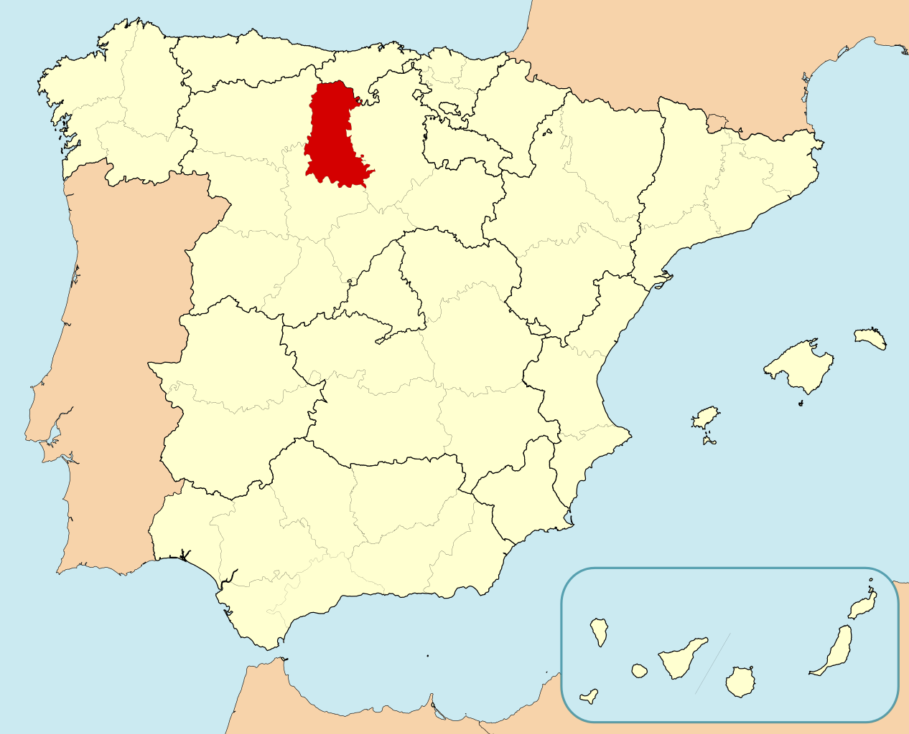
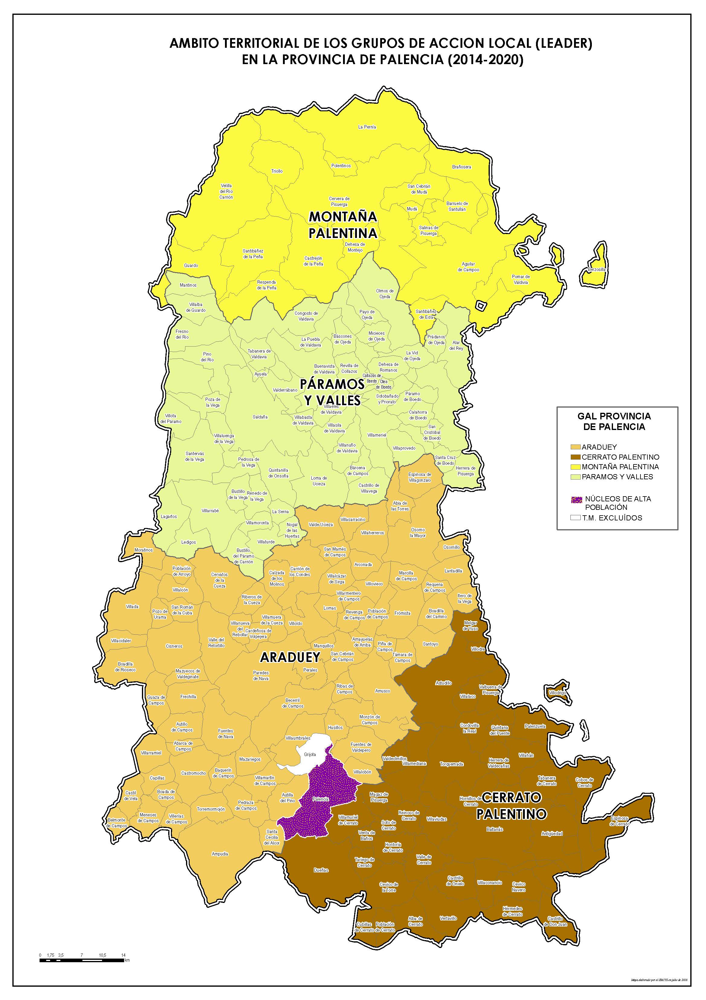
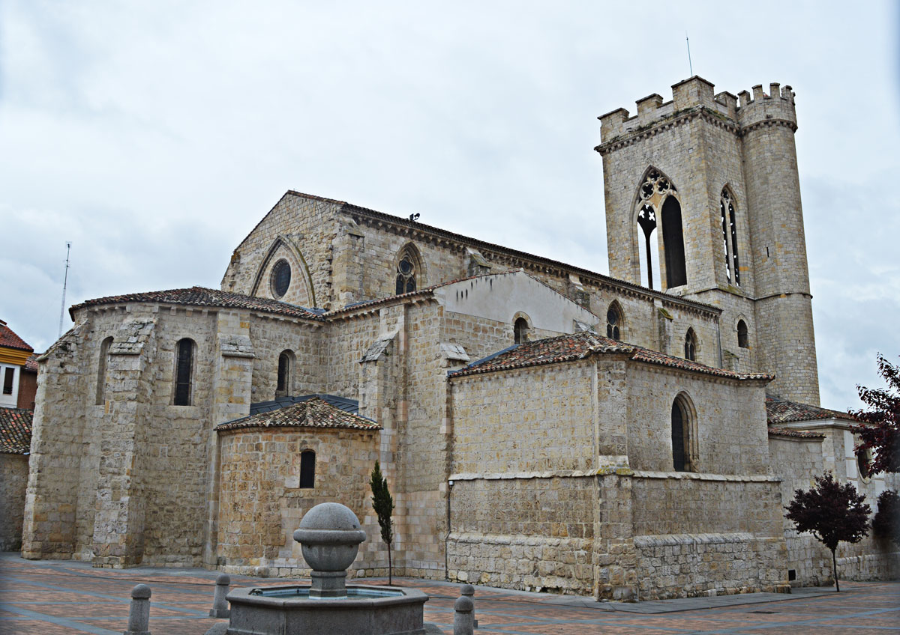
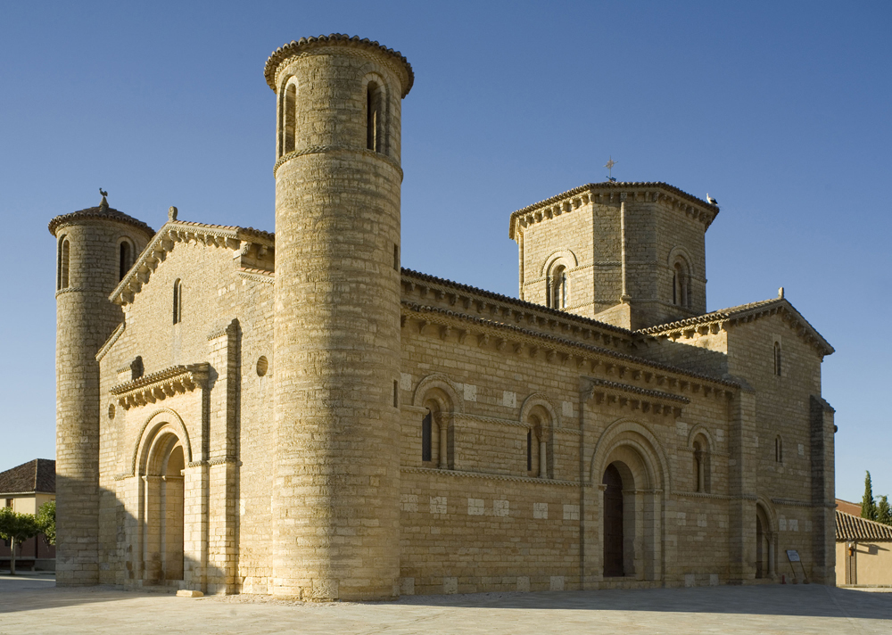
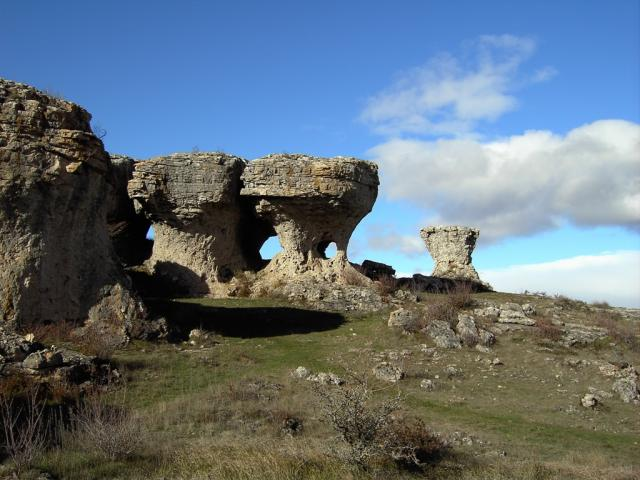
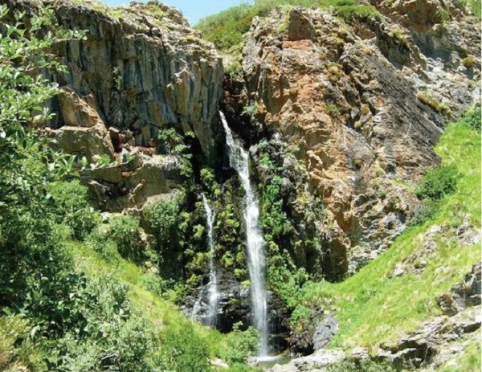

Informacion
Localización
Localidades principales
Geografía de la provincia
Historia
Cultura
Naturaleza
Tradiciones
Otros aspectos de interés
Palencia
_______________________________________________________________________________________________________________________________________________________________
Localización
Palencia es una ciudad y municipio español de la comunidad autónoma de Castilla y León, capital de la provincia de Palencia. Se encuentra situada en la llanura
de Tierra de Campos, a orillas del río Carrión.
Ubicada a 749 metros sobre el nivel del mar, dista 235 km de Madrid y 47 km de Valladolid, siendo las dos capitales de provincia españolas más próximas entre
sí. El municipio cuenta con una población de 78 892 habitantes (INE 2017) sobre una extensión de 94,95 km². Por su parte, el alfoz de la ciudad, conformado por
diez municipios, cuenta con más de 20 000 habitantes, que unidos a los de la capital suman más de 100 000 personas. Es un importante centro industrial de
Castilla y León.

_______________________________________________________________________________________________________________________________________________________________
Localidades principales
Localización Province Palencia : País España, Comunidad Autónoma Castilla y León.
Grandes ciudades : Palencia, Aguilar de Campoo, Villamuriel de Cerrato, Venta de Baños, Guardo, Saldaña, Dueñas, Cervera de Pisuerga, Grijota, Carrión
de los Condes, Herrera de Pisuerga, Paredes de Nava, Villalobón, Velilla del Río Carrión, Osorno la Mayor, Baltanás, Barruelo de Santullán, Santibáñez
de la Peña, Magaz de Pisuerga, Astudillo, Torquemada, Alar del Rey, Villada, Villarramiel, Frómista, Becerril de Campos, Villaumbrales, Fuentes de Nava,
Ampudia, Villaluenga de la Vega, Monzón de Campos, Cevico de la Torre, Tariego de Cerrato, Pomar de Valdivia, Fuentes de Valdepero, Santervás de la Vega,
Cisneros, Amusco, San Cebrián de Campos y Antigüedad.

_______________________________________________________________________________________________________________________________________________________________
Geografía de la provincia
La capital se sitúa en el valle del río Carrión cerca de su desembocadura en el Pisuerga. El primero atraviesa la ciudad de norte a sur, y se abre en tres
brazos al entrar en la ciudad, formando la isla del Sotillo y otra pequeña isla, ambas ocupadas por un parque llamado Sotillo de los Canónigos, así llamado
por servir antiguamente de zona de paseo para los canónigos de la vecina catedral.
El Carrión se vuelve a unir (es el lugar en el que se encuentra el Puente Mayor (del siglo xvi) para abrirse de nuevo en dos brazos, formando otra isla
(isla Dos Aguas), ocupada en su zona norte por un parque y en la sur por diversas instalaciones deportivas y un campo de golf. El río forma pequeñas cascadas
y es fuente para un géiser artificial que adorna el cauce a la altura del Puente Mayor. Al abandonar la ciudad, el río vuelve a unir sus aguas.
La urbe se sitúa en una amplia zona llana, con dos cerros en la parte nororiental: cerro del Otero y cerro de san Juan. En el más cercano al centro de la
ciudad se sitúa la colosal imagen del Sagrado Corazón de Jesús de Palencia, el Cristo del Otero, obra del escultor Victorio Macho.
Palencia dispone también de un monte con 1438 hectáreas de robles y encinas a 6 km de distancia y a 865 m sobre el nivel del mar, conocido como "Monte el
Viejo". El monte, uno de los lugares de esparcimiento y ocio para la población, es accesible por una carretera y un carril-bici. La vegetación está formada
en la parte más alta y seca por encinas y quejigos y a medida que se desciende en altitud va tornando más verde, a quejigos, robles y chopos. En el monte se
halla una cerca de gran tamaño en la que habitan ciervos autóctonos que pueden ser avistados con facilidad por los visitantes. Además de la reserva cinegética,
el Monte el Viejo dispone de varias instalaciones: rutas con obstáculos y aparatos para ejercitarse, piscinas municipales, un bar y un restaurante, un refugio
y las llamadas Casa Pequeña y Casa Grande; la última es una posada del siglo xvi. En los alrededores de la ciudad los cultivos salpicados de bosquetes de chopos,
robles y encinas son la vegetación más abundante.
El cauce verdadero del canal de Castilla no atraviesa la ciudad, pero un ramal, llamado el "Ramalillo" o la Dársena, sí se adentra en las afueras del casco.
Esta dársena se utilizaba para cargar mercancías, pero con la llegada del ferrocarril cayó en desuso. Actualmente se encuentra rehabilitada para el turismo
y a sus orillas, en una de las casas de labor de la misma, se encuentra el Museo del Agua.
El término municipal de Palencia comprende también la localidad de Paredes de Monte.
Ubicacion
La ciudad de Palencia se encuentra en el norte de la península ibérica, en la submeseta Norte. El parque del Salón de Isabel II, centro geográfico de la ciudad, está situado en las coordenadas: 42º00'40 de latitud norte y 4º31'59 de longitud oeste. Se encuentra a 749 metros sobre el nivel del mar.Diagrama de las localidades a un radio de 10 km a la redonda de Palencia.
Hidrografia
La localidad es atravesada por el río Carrión; al este del mismo se encuentra la mayor parte de la ciudad, mientras que al oeste se extiende el barrio de Allende el Río. Además, el término municipal es atravesado por el canal de Castilla, por el arroyo de Villalobón y otras acequias. A las afueras de Palencia se encuentra una de las dársenas del canal de Castilla para cuyo acceso se construyó el “Ramalillo” de Palencia, de más de 1 kilómetro de longitud.Orografia
Palencia se encuentra a 749 m sobre el nivel del mar, en una zona de meseta llana, rodeada por varios montes: monte "El Chivo" y monte "El Viejo". Es precisamente esta orografía la que propicia que el clima de la capital sea algo más frío que el de localidades muy próximas como Valladolid acercándose sus temperaturas medias más a ciudades como León o Burgos, situadas a mayor altitud.Ver video desde youtube - Video realizado por Así es el mundo
_______________________________________________________________________________________________________________________________________________________________
Historia
Edad Antigua
Los orígenes históricos de la ciudad quedan inciertos, pero de lo que sí hay constatación arqueológica es de asentamientos prerromanos en el solar de la ciudad actual, a la que los celtíberos denominaron Pallantia. El pueblo que la ocupó fue el de los vacceos: el más culto de las tribus celtíberas, agrario y con una poderosa organización militar.El rastro más evidente de romanización que queda en la ciudad es el puente llamado Puentecillas, de origen romano aunque remodelado varias veces. Este puente permitía el acceso a la isla del Sotillo de los Canónigos. Aquí se sitúa el llamado Bolo de la Paciencia, una piedra redonda que fue el mentidero de la ciudad. El puente fue restaurado y remodelado en la Edad Media.
En la Hispania visigoda fue sede episcopal de la Iglesia católica desde el siglo iv, como sufragánea de la archidiócesis de Toledo que comprendía la antigua provincia romana de la Cartaginense. Con los visigodos llegó una de las etapas de mayor esplendor para la ciudad, pues fue una de las sedes de la Corte. Quedan restos del vestigio visigodo en la Cripta de San Antolín (que es la actual cripta de la catedral) y en la cercana localidad de Baños de Cerrato con la iglesia de San Juan de Baños (siglo vii), situada a 7 km de la capital, y considerada la obra cumbre de la arquitectura visigoda.
Edad Media
Se desarrolló como ciudad durante la Reconquista por los reyes asturleoneses. Perdida la diócesis palentina tras la ocupación musulmana, no se restauró hasta que el propio rey Sancho III el Mayor encomendó al obispo de Palencia Poncio la organización de la misma. Según la leyenda, el rey se encontró con las ruinas de un templo dedicado a san Antolín mientras cazaba un jabalí y recibió la revelación de restaurar la pequeña iglesia. Descubiertas así las ruinas que abrigaban los restos del mártir, habría sido elegido el lugar como centro de la sede episcopal. Tras la restauración y ampliación del santuario, se consagra el nuevo edificio con presencia del rey y de varios obispos en el año 1035.La Edad Media es el período más turbulento de la historia de la ciudad, pero también el de mayor proyección en los acontecimientos en la historia del Reino de León y del Reino de Castilla. Alfonso VIII de Castilla fue el más decidido impulsor de la ciudad, al concederle fueros y el primer concejo libre, y establecer entre 1208 y 1212, a instancias del obispo Tello Téllez de Meneses, una institución educativa que fue la primera Universidad de España denominada Universidad de Palencia o Estudio General de Palencia, recibiendo la aprobación pontificia de Honorio III en 1221 y desapareciendo unas décadas más tarde. La ciudad luchó noblemente en la batalla de Las Navas de Tolosa, en 1212, lo que le supuso la adjudicación de diversos bienes.
De la predilección que el rey Alfonso VIII y su familia tuvieron por la ciudad son muestra que el su hijo y heredero Enrique I murió en la misma, en un desgraciado accidente; o que la hija del soberano, Blanca de Castilla, futura reina de Francia y madre de san Luis, viniera al mundo en Palencia.
Es también de destacar que, en 1388, mientras los palentinos estaban fuera de la ciudad, tropas del Duque de Lancaster llegaron con intención de saquear la ciudad, la cual fue defendida valerosamente por las mujeres palentinas evitando que Lancaster sometiera Palencia. Por ello se premió a la mujer palentina con la banda amarilla de honor, que solo podían llevar los hombres, y que hoy día queda patente en el traje regional.
Es en el siglo xiv cuando la importancia y el volumen que había ido adquiriendo la ciudad obligan a la edificación de una nueva catedral capaz de satisfacer las necesidades de una población pujante. El edificio se construyó sobre las ruinas del anterior de estilo románico, y a su vez sobre las anteriores de la catedral visigoda, quedando de todas ellas vestigios en la edificación actual. Aunque la primera piedra de la nueva catedral se colocó en 1321, las obras no concluyeron en lo esencial hasta finales del siglo xvi. Durante la Baja Edad Media y el Renacimiento se construyeron grandes iglesias y monasterios, como el Convento de san Pablo, (gótico tardío), el Monasterio de las Claras (gótico), el monasterio de san Francisco (gótico con elementos añadidos renacentistas y barrocos), o la iglesia de la Compañía, (típicamente jesuita). La nobleza castellana, los señoríos eclesiásticos o la propia diócesis, que durante los siglos XIV y XV fue de las más extensas y ricas de Castilla, patrocinaron estas construcciones.
Edad Moderna
La prosperidad económica del siglo xvi convirtió a Palencia, junto a otras provincias castellanas, en el corazón económico y demográfico del Imperio español. Ya en el siglo xviii, el acontecimiento más beneficioso para la vida de la ciudad fue la construcción del canal de Castilla impulsada por el rey Fernando VI continuada con Carlos III, una de las más representativas obras de ingeniería civil de la época en Europa, comienza en Alar del Rey y cuenta con 38 esclusas en la geografía palentina que riega de norte a sur. Pasa próximo a San Quirce entre las esclusas 1ª, 2ª y 3ª, llegando a Herrera se encuentran las tres siguientes esclusas, y la de retención de San Andrés en lo que fuera fábrica de Batán, siguiente esclusa Ventosa de Pisuerga, sigue Zarzose, después Naveros, San Llorente, Puente del Rey, esclusa 15 en el camino de Villadiezma; cruza arroyo de Vallarna y el Puente de Requena para llegar a Frómista donde están las esclusas 17 a 21, después Piña, Monzón, Palencia y Grijota; en Villamartín alcanza Viñalta y de allí se deriva un ramal recto que viene hasta los márgenes del río Carrión, en Palencia. Desde Palencia va hasta Villamuriel, cruza los sotos de Aites y Albures donde hay cuatro esclusas más y atraviesa el viejo camino real, en la esclusa 38, en Dueñas para ya entrar en la provincia de Valladolid.Edad Contemporanea
Durante el siglo xix, se derribó la muralla de la ciudad, de la que formaba parte por ejemplo la puerta de Monzón.6El siglo xx dejó una importante huella en la ciudad. La Primera Guerra Mundial y la guerra civil española favorecieron, hasta cierto punto, el desarrollo económico de la ciudad, cuyas industrias (harina, lana, armas) eran imprescindibles para el abastecimiento de los beligerantes. En el siglo xx destacó la actividad creativa de importantes artistas palentinos, como el escultor Victorio Macho con su célebre Cristo del Otero y su Monumento a Berruguete o el arquitecto Jerónimo Arroyo que dejó en la ciudad multitud de edificios y palacios como el Palacio de la Diputación, el Colegio Villandrando, el Instituto Jorge Manrique o el actual Centro de Salud de la Puebla.
Véase también: Guerra Civil Española en la provincia de Palencia En la Palencia prebélica el partido con mayor fuerza era el Partido Socialista, mientras que en la provincia el partido más importante era Acción Popular Agraria. La Falange contaba con muy pocos afiliados, y la mayoría de ellos se encontraban en prisión.

El 19 de julio de 1936 una columna militar salió hacia Venta de Baños y tomó la estación de tren, a continuación toda la ciudad sin que apenas alguien se percatara de ello. A las siete de la mañana, otra fuerza salió hacia el centro de la capital provincial para declarar el estado de guerra y ocupar los edificios más importantes. A diferencia de lo sucedido en Venta de Baños hubo una fuerte oposición al levantamiento, se produjeron tiroteos por las calles y una gran resistencia en el Gobierno Civil republicano durante dos horas a cargo de guardias de Asalto y Carabineros concentrados por el gobernador, López Muñiz quien después murió a tiros cuando ya había sido detenido. La Diputación, el Ayuntamiento y la estación de trenes fueron ocupados con más facilidad. El general Ferrer de Miguel se hizo cargo de la Diputación Provincial y del Gobierno Civil, aunque desde el 19 de julio ambas autoridades habían sido entregadas a un mando militar. Un capitán de artillería fue nombrado alcalde. Muchos fueron los detenidos durante esos días en Palencia, especialmente cuando llegaron armados desde los pueblos de la provincia, respondiendo a la convocatoria del Gobernador Civil. Por su parte, el jefe de la Falange palentina fue liberado y organizó rápidamente una escuadra mixta de falangistas y guardias civiles que recorrió los pueblos de la provincia eliminando todo tipo de resistencia. Gran parte de los represaliados fueron enterrados en la fosa de los alcaldes, en el antiguo cementerio de la ciudad, transformado en 1981 en el parque infantil de La Carcavilla, y donde a partir de 2009 comenzaron las exhumaciones a cargo de la ARMH. Se estima que son 497 las personas enterradas allí.
La remodelación de la ciudad emprendida a fines del siglo xx propició la creación de multitud de espacios verdes, como el parque de la Carcavilla o la Isla dos Aguas, que llevaron a la ciudad a ser la primera en zonas verdes por habitante de España

Cultura
Fiestas
- El Bautizo del Niño: el día 1 de enero, de Interés Turístico Nacional. Fiesta singular que se celebra alrededor de la iglesia de san Miguel con una procesión y una "pedrea" de confites y caramelos.
- San Antón: se celebra el día 17 de enero en las inmediaciones de la iglesia de san Miguel donde se bendicen los animales de los asistentes.
- Festividad de Virgen de la Calle (Las Candelas): el 2 de febrero. Patrona de la ciudad. En la parroquia de Nuestra Señora de la Calle se venera la imagen de la Virgen, conocida como "La Morenilla" y es llevada en procesión hasta la Catedral.
- Semana Santa: marzo-abril, (primer plenilunio primaveral) es la fiesta más importante del calendario palentino, pues posee el distintivo de Fiesta de Interés Turístico Internacional. Relevante importancia tienen las procesiones de "La Borriquilla", "Oración del Huerto", "Los Pasos" y "Santo Entierro" cuyas características más destacables son su sobriedad y sencillez. Las tradiciones más importantes son la "llamada de hermanos" y el "tararú". Véase: Semana Santa en Palencia.
- Romería de Santo Toribio: el domingo más cercano al 16 de abril, Fiesta de Interés Turístico Regional. Se celebra una "pedrea" de pan y queso a los pies del Cristo del Otero. (Véase Cristo del Otero)
- Caracolada de San Marcos: celebrada el 25 de abril en la isla del Sotillo de los Canónigos.
- Feria Chica: días en torno a Pentecostés. Popular fiesta de Palencia llamada "chica" por ser la segunda en importancia si se compara con las ferias de San Antolín.
- Procesión y misa del Corpus Christi: domingo más cercano al jueves del Corpus. La procesión y misa están organizadas por la Cofradía Penitencial del Santo Sepulcro y Cabildo catedralicio. El Santísimo procesiona en el Carro Triunfante, de singular belleza.
- Día de san Juan (coloquialmente "San Juanillo"): 24 de junio. Copatrón de Palencia, se realiza una procesión en la que desfila el San Juan de la cofradía del Santo Sepulcro. Desde su sede llega hasta la plaza Mayor, donde se realiza la tradicional repartida del tomillo. La procesión llega hasta el barrio de San Juanillo donde se venera la reliquia y se escucha una oración; por la noche tiene lugar la Hoguera de San Juan.
- Fiestas de San Antolín: patrón de Palencia, día 2 de septiembre. Se suceden las procesiones, pasacalles, corridas de toros, pregones y desfiles de peñas. Es la fiesta principal de Palencia. (Véase Cripta de San Antolín)
- Procesión en honor a san Francisco: tras la misa, la Cofradía de San Francisco realiza un pequeño desfile con la imagen del Santo.
Ver video desde youtube - Video realizado por León Televisión
_______________________________________________________________________________________________________________________________________________________________
Naturaleza
El campo palentino luce verde desde octubre hasta junio, viéndose alterado por la nieve y la escarcha invernal. A partir de junio o julio el paisaje se
convierte en una estepa que recuerda más a la típica imagen de la "Castilla seca". La vegetación, dada su situación a caballo entre la España húmeda del norte
y la España seca del sur, está compuesta principalmente por chopos (especie de repoblación), robles y encinas.
La ciudad posee la mayor superficie ajardinada de España en relación a la superficie que ocupa y es una de las mayores de Europa. (15 000 000 m² de jardines
en el casco urbano: Parque de Isabel II, Jardinillos de la Estación, Huerta de Guadián, La Carcavilla, entre otros y más 14 000 000 de "El Monte el Viejo").

En 2010 la ciudad de Palencia ganó el premio de "Ciudad más sostenible de España".
Según el Ayuntamiento de la capital, Palencia es la ciudad con más zonas verdes por habitante de España y ocupa uno de los primeros lugares de la Unión Europea.
Esto, unido a la escasa densidad del tráfico rodado propicia que el aire de la ciudad sea bastante limpio.

_______________________________________________________________________________________________________________________________________________________________
Tradiciones
1 de Enero: Bautizo del Niño. Tras una ceremonia religiosa, la cofradía, que tiene su sede en San Miguel, lleva en procesión al niño alrededor de la iglesia
bailándolo al ritmo de un villancico medieval que relata desde las profecías hasta los acontecimientos que rodearon al nacimiento de Jesús. Siguiendo la
tradición de los bautizos, la madrina tira desde un balcón caramelos y monedas a los asistentes.
17 de Enero: San Antón. También en la iglesia de San Miguel se presentan semillas y animales para que sean bendecidos. El acto se ameniza con coplas sobre la
vida y milagros del santo.
2 de Febrero: La virgen de la Calle. Jornada festiva en Palencia para honrar a su patrona. Se recorre la ciudad con pasacalles y el aire se llena de cantos y danzas
tradicionales.
Carnaval. Desfile de disfraces y atracciones de feria tienen su complemento gastronómico dulce con las hojuelas.
Semana Santa. Procesiones austeras, típicamente castellanas. Unos pasos con esculturas dramáticas recorren la ciudad en medio del recogimiento religioso.
_______________________________________________________________________________________________________________________________________________________________
Otros aspectos de interés
Palencia, como la mayoría de ciudades castellanas, cuenta con un gran patrimonio histórico-artístico, que atestigua la importancia que tuvo en el pasado.
A pesar de contar con importantes monumentos como la catedral, una de las más grandes de España, el Cristo del Otero que es una de las imágenes de Jesús más
grandes del mundo o cinco Monumentos Nacionales y singulares fiestas de gran interés como la Semana Santa o la Romería de Santo Toribio, Palencia no es una
ciudad favorita para el turismo y aunque crece año a año el número de turistas lo hace muy lentamente.
La ciudad se sitúa entre las ciudades de España con una mayor superficie ajardinada en relación al número de habitantes que tiene;16 además, cuenta una extensa
red de calles peatonales en el centro, y está considerada como una de las ciudades más sostenibles y limpias de España.
| Lunes | +10° | +1° | |
| Martes | +8° | +2° | |
| Miércoles | +17° | +3° | |
| Jueves | +13° | +5° | |
| Viernes | +11° | +3° | |
| Sábado | +10° | +1° |
_______________________________________________________________________________________________________________________________________________________________
Mapa Castilla y Leon

Correo: david.alomon@educa.cyl.es